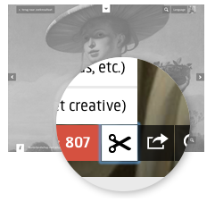

Kunst für alle
Digitale Meisterwerke zum genießen, lernen, experimentieren und remixen
Rijksstudio (NL)
 Informationen über Kunstwerke sind oft der Wissenschaft und Kulturinstitutionen wie Museen vorbehalten.
Interessierte Laien finden in der Regel nur durch Ausstellungsbesuche oder teure Kataloge und Fotobände Zugang zu
diesen Werken. Auch Designer, die berühmte Werke für ihre Produkte nutzen möchten, werden oft durch strenge
Nutzungsrechte beschränkt.
Informationen über Kunstwerke sind oft der Wissenschaft und Kulturinstitutionen wie Museen vorbehalten.
Interessierte Laien finden in der Regel nur durch Ausstellungsbesuche oder teure Kataloge und Fotobände Zugang zu
diesen Werken. Auch Designer, die berühmte Werke für ihre Produkte nutzen möchten, werden oft durch strenge
Nutzungsrechte beschränkt.
Das Rijksmuseum in Amsterdam hat eine Webseite namens “Rijksstudio” geschaffen, in der Bilder und Informationen zu ihrer Sammlung frei verfügbar sind. Damit können Nutzerinnen und Nutzer Kunstwerke betrachten, sich umfassend darüber informieren sowie digitale Kopien herunterladen und diese kreativ weiterverwenden.
 Das Amsterdamer Rijksmuseum hat Fotos von rund 200.000 Kunstobjekten seiner Sammlung online gestellt. Darüber hinaus können über diese Sammlung detaillierte Angaben zu allen Kunstwerken gefunden werden, wie z.B. Titel, Künstler, Objektnummer, Entstehungsdatum, Material und Herkunft.
 Maria studiert Kunstgeschichte. Bei ihrem letzten Besuch in Amsterdam war sie hin und weg von der Sammlung des
Rijksmuseums. Die Vielfalt der dort ausgestellten Werke hat ihr Interesse an der Geschichte der niederländischen
Kunst geweckt. Deswegen war sie sehr beeindruckt von der Internetseite des Museums, auf der sie 200.000 Werke der
Sammlung des Museums virtuell als Fotos wiederfindet.
Maria studiert Kunstgeschichte. Bei ihrem letzten Besuch in Amsterdam war sie hin und weg von der Sammlung des
Rijksmuseums. Die Vielfalt der dort ausgestellten Werke hat ihr Interesse an der Geschichte der niederländischen
Kunst geweckt. Deswegen war sie sehr beeindruckt von der Internetseite des Museums, auf der sie 200.000 Werke der
Sammlung des Museums virtuell als Fotos wiederfindet.
Da Maria sich nicht nur in ihrem Studium gerne mit Kunst beschäftigt, sondern ihre liebsten Werke auch gerne in ihrer Wohnung als Plakate oder Postkarten aufhängt, ist sie eine begeisterte Besucherin von Museumsshops. Das Rijksmuseum bietet jedoch viel mehr als das. Denn im “Rijksstudio” kann Maria nicht nur alle Werke auch in ihrer von Amsterdam weit entfernten Unistadt Frankfurt ansehen, sondern auch damit experimentieren. Wie das geht? Nutzerinnen und Nutzer müssen sich zunächst mit ihrer E-Mail-Adresse registrieren. Anschließend können sie im Rijksstudio Bilder mittels einer Webanwendung zuschneiden, ausschneiden und neu zusammensetzen und auf diese Weise zum Beispiel eine individuelle Handy-Hülle erstellen. Diese neuen Kreationen alter Meisterwerke – so genannte „Mash-ups“ oder „Remixes“ – können dann auch wiederrum als Foto mit anderen geteilt werden. Maria hat so etwa ihre Uni-Ordner verschönert. Durch das Teilen können das auch andere mit ihren Kreationen tun.
 Das Rijksmuseum findet die Nutzung des Rijksstudios für Designartikel und andere Ideen so gut, dass es bereits zum
zweiten Mal den Wettbewerb “Make your Own Masterpiece” ausgerufen hat, bei der die zehn besten, mithilfe des
Rijksstudios geschaffenen Designs gekürt werden. Dies können so unterschiedliche Dinge sein wie mit Kunstwerken
bedruckte Kleider und Tischdecken, Lampenschirme, Armreifen, Lebensmittelverpackungen oder Kunstwerken
nachempfundene Sonnenbrillen.
Das Rijksmuseum findet die Nutzung des Rijksstudios für Designartikel und andere Ideen so gut, dass es bereits zum
zweiten Mal den Wettbewerb “Make your Own Masterpiece” ausgerufen hat, bei der die zehn besten, mithilfe des
Rijksstudios geschaffenen Designs gekürt werden. Dies können so unterschiedliche Dinge sein wie mit Kunstwerken
bedruckte Kleider und Tischdecken, Lampenschirme, Armreifen, Lebensmittelverpackungen oder Kunstwerken
nachempfundene Sonnenbrillen.
 Maria kann mit dem Rijksstudio jedoch nicht nur ihre Uniordner dekorieren, sondern auch zu vielen Kunstwerken
detaillierte Angaben finden. Das hat ihr schon das ein oder andere Mal beim Schreiben einer Hausarbeit sehr
geholfen. Über die Seite konnte sie so beispielsweise recherchieren, welche Technik für ein bestimmtes Bild
verwendet wurde, welche Beschreibung des Objekts im Museumskatalog steht, und in wessen Besitz das Bild aktuell ist.
Damit kommt Maria den alten niederländischen Meistern immer näher auf die Spur.
Maria kann mit dem Rijksstudio jedoch nicht nur ihre Uniordner dekorieren, sondern auch zu vielen Kunstwerken
detaillierte Angaben finden. Das hat ihr schon das ein oder andere Mal beim Schreiben einer Hausarbeit sehr
geholfen. Über die Seite konnte sie so beispielsweise recherchieren, welche Technik für ein bestimmtes Bild
verwendet wurde, welche Beschreibung des Objekts im Museumskatalog steht, und in wessen Besitz das Bild aktuell ist.
Damit kommt Maria den alten niederländischen Meistern immer näher auf die Spur.
Offizielle Seite:
https://www.rijksmuseum.nl/en/rijksstudio
Wettbewerb “Make Your Own Masterpiece”:
https://www.rijksmuseum.nl/en/rijksstudio-award
https://www.rijksmuseum.nl/en/rijksstudio-award-2014